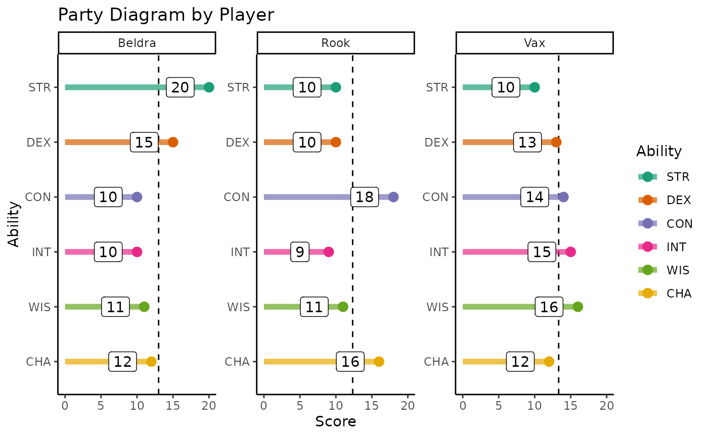
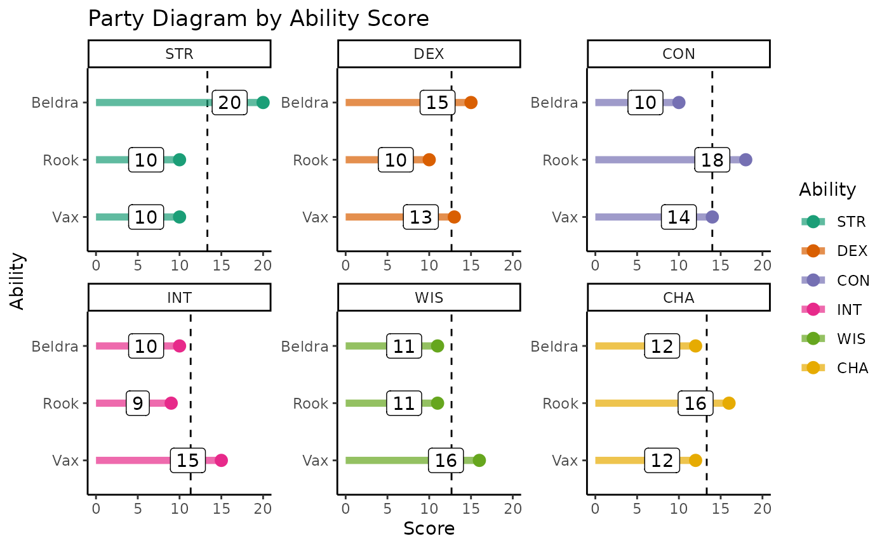

Balancing Encounters
When I am the Dungeon/Game Master (DM / GM) I find encounter
balancing to be really difficult, in part because of the nest of
interrelated tables and experience point multipliers outlined in the
Dungeon Master’s Guide (DMG) that must be consulted for novice GMs such
as myself. To help other newbies, dndR includes two core
functions aimed at simplifying encounter balancing.
Experience Point (XP) Thresholds
The difficulty of an encounter in D&D is affected by three things:
- Level of characters
- Number of characters in the party
- How difficult the GM wants to make things for their players
The DMG handles this by providing experience point (XP) thresholds
based on these three factors. All enemies are worth a pre-determined
amount of XP so encounters are balanced by the DMG listing the total XP
of all monsters in a given fight for every level of players, party size,
and difficulty. That table is useful but a little dense to work through
as you’re prepping potentially multiple encounters per session, so this
is where xp_pool becomes useful.
xp_pool returns the amount of XP the GM can ‘spend’ on
monsters in a given encounter to ensure the difficulty is as desired
based on the three factors identified above.
dndR::xp_pool(party_level = 2, party_size = 4, difficulty = "medium")
#> [1] 625In the above case, the DM can have their four-person, level two party face creatures worth a total of 625 XP and be reasonably confident that the difficulty will be somewhere in the middle.
XP Multipliers
However, while knowing the amount of XP available to the DM per encounter is helpful, it fails to account for the effect of the number of enemies. A fight versus a single monster worth 1000 XP is a very different proposition than a fight against four creatures each worth 250 XP even though the total XP is the same.
The DMG accounts for this by providing XP multipliers based on the number of monsters and the number of players. The same total monster XP is multiplied by a larger value for more monsters facing a smaller party than it would be for fewer monsters facing a larger party.
So, if you are using the DMG to balance an encounter you have to total up the XP of the monsters in an encounter and then go to a different part of the DMG where you can multiply that value by the multiplier in the relevant row of a second table which would then tell you the “actual” XP of the creatures you have selected. If you had too many or too few monsters you’d have to repeat this process iteratively until you identified the correct amount of “raw” XP to yield your desired “realized” XP in an encounter. Cumbersome, right?
dndR’s xp_cost function provides an
alternative to using the multiplier table. xp_cost requires
the “raw” XP of the monsters you have selected, the number of monsters,
and the number of player characters (PCs) and returns the “realized” XP.
You can then quickly compare this with the value return by
xp_pool to determine whether you need to add or remove
creatures from your encounter.
dndR::xp_cost(monster_xp = 1000, monster_count = 2, party_size = 3)
#> [1] 1500Balancing Demonstration
That was a lot of content so let’s run through a quick example to see
how xp_pool and xp_cost work together to make
encounter balancing simpler. Let’s say I am running a game for four
players, all level 3, and I want to design a hard encounter for
them.
To begin, I’d identify the total XP I can spend to make an encounter
of this difficulty using xp_pool.
dndR::xp_pool(party_level = 3, party_size = 4, difficulty = 'hard')
#> [1] 1112Okay, so the pool of XP available for me to spend is 1,112. Keeping
that threshold in mind, I can use xp_cost to check the
value of two monsters worth (total) 500 XP against that threshold.
dndR::xp_cost(monster_xp = 500, monster_count = 2, party_size = 4)
#> [1] 750I can see that I’m well under the XP threshold I have to play with so I can add a monster and see where that leaves me.
dndR::xp_cost(monster_xp = 750, monster_count = 3, party_size = 4)
#> [1] 1500A little over because of the multiplier, so let’s say I change my mind and keep three monsters but change their identity to one with a lower XP value.
dndR::xp_cost(monster_xp = 600, monster_count = 3, party_size = 4)
#> [1] 1200Basically right on target! I can now pick out my three monsters that total up to 600 XP raw and know that they will likely* make a hard encounter for my players! (* “Likely” because there is dice rolling involved and it is possible that the monsters roll well while my players roll badly or vice versa).
Monster Creation
Creatures that you create (or “homebrew”) can be a great way to add
flavor to an encounter or can even form the centerpiece of a larger
campaign arc! dndR’s monster_stats and
monster_creator functions can help DMs to quickly stat out
their custom monsters
Finding Official Monster Statistics
The DMG provides a table (see p. 274) that gives the vital statistics of creatures based on their Challenge Rating (CR) but this table can be cumbersome to compare to Experience Points (you know, the things used to determine how hard an encounter will be for your party?).
monster_stats streamlines this process by allowing you
to either
- Input the XP you want to spend on this creature (you can use the
value returned by
xp_cost)
OR
- Input the challenge rating (CR) if you know it.
Once either XP or CR is provided, monster_stats returns
the creature’s statistics as they appear in the DMG for a
single creature of that difficulty.
dndR::monster_stats(cr = 7)
#> # A tibble: 8 × 2
#> statistic values
#> <chr> <chr>
#> 1 Challenge 7
#> 2 DMG_XP 2900
#> 3 Prof_Bonus 3
#> 4 Armor_Class 15
#> 5 HP_Range 161-175
#> 6 HP_Average 168
#> 7 Attack_Bonus 6
#> 8 Save_DC 15Challenge Rating is more than a little esoteric so feel free to ignore that argument entirely if XP is more comfortable for you! Note that XP is rounded down to the nearest specified monster “tier” specified in the DMG.
dndR::monster_stats(xp = 8000)
#> # A tibble: 8 × 2
#> statistic values
#> <chr> <chr>
#> 1 Challenge 11
#> 2 DMG_XP 7200
#> 3 Prof_Bonus 4
#> 4 Armor_Class 17
#> 5 HP_Range 221-235
#> 6 HP_Average 228
#> 7 Attack_Bonus 8
#> 8 Save_DC 17If you specify both CR and XP, the function prints a warning and proceeds only with CR (i.e., ignoring whatever you put in as XP). I figured if a user is confident enough to put CR at all it should be given priority but am happy to tweak this if desired!
dndR::monster_stats(xp = 1000, cr = 4)
#> CR and XP both specified, proceeding with CR
#> # A tibble: 8 × 2
#> statistic values
#> <chr> <chr>
#> 1 Challenge 4
#> 2 DMG_XP 1100
#> 3 Prof_Bonus 2
#> 4 Armor_Class 14
#> 5 HP_Range 116-130
#> 6 HP_Average 123
#> 7 Attack_Bonus 5
#> 8 Save_DC 14Making Custom Monsters
If you’d rather take a more individualized approach, you can use
monster_creator instead. This function follows the advice
of Zee Bashew on how to
build interesting, challenging monsters for your party. These monsters
are built somewhat according to the Dungeon Master’s Guide for creating
monsters, partly Zee’s YouTube video on
homebrewing monsters based on the videogame The Witcher,
and partly on my own intuition about scaling the difficulty of a
creature.
Creatures made by monster_creator have the following
information in addition to the statistics returned by
monster_stats:
- Up to five damage resistances
- Up to two damage immunities
- One vulnerability
- Proficiency in two saving throws
- Fully custom ability scores (returned only as their modifiers)
This combination allows you to build complex and mysterious homebrew monsters with plenty of opportunities for the party to have to investigate around to discover the monster’s strengths and weaknesses before the final showdown.
dndR::monster_creator(party_level = 5, party_size = 4)
#> statistic value
#> 1 Hit_Points 92
#> 2 Armor_Class 16
#> 3 Prof_Bonus 3
#> 4 Attack_Bonus 7
#> 5 Save_DC 16
#> 6 Prof_Saving_Throws INT; CON
#> 7 Immune_to cold; radiant
#> 8 Resistant_to acid; force; psychic; piercing; bludgeoning
#> 9 Vulnerable_to thunder
#> 10 STR +2
#> 11 DEX +1
#> 12 CON +1
#> 13 INT +1
#> 14 WIS +1
#> 15 CHA +2Creature’s special traits are chosen randomly so you may want to re-run the function several times (or mentally modify one or more parts of the output) to get a monster that fits your campaign and players.
Note that if you use monster_creator you may want to
help your players identify the creature’s immunities and vulnerabilities
before the actual confrontation with the creature to avoid
sending them into a fight that is more difficult than your party can
handle.
Non-Player Characters (NPCs)
DM: “You walk into the tavern and glance around the poorly lit room. In a corner booth, you catch sight of the betrayer you’ve been hunting these past two weeks–Tymoth Grissel. You nearly had him in the Sootpile mountains but that rockslide allowed him to escape by the skin of his teeth. He won’t escape this time.”
Player: “Cool, cool…but who else is in the tavern?
DM: …
When I’m DMing, I sometimes struggle with improvising background NPCs
(non-player characters) that aren’t relevant to the current questlines
when my player ask about them. To hopefully help fellow DMs,
dndR includes a function to let you quickly respond in
situations like the one I’ve described above.
npc_creator quickly selects a random race and job for
however many NPCs you need. The function returns this as a dataframe in
case you had some follow-up processing you wished to do but I find
myself running the function without assigning it to an object so that it
prints in the console.
dndR::npc_creator(npc_count = 3)
#> Race Job
#> 1 half orc student of magic
#> 2 high elf investigator
#> 3 warforged smugglerIf your players decide to go chat with the goblin carpenter passing them on the street (or whoever else they cross paths with) you can then improv more details about the NPC as needed. Hopefully this function helps you skip the “uh…” step of trying to on-the-fly come up with some brief NPC descriptions.
Note that because both NPC race and job are selected randomly you may
wind up with some unusual combinations. I hope that adds to the fun but
feel free to re-run npc_creator until you get NPCs that fit
your world and intended tone.
Party Diagram
When designing encounters (or even a longer campaign arc) it can be
helpful to know your party’s strengths and weaknesses. If your party on
average has great CON scores, it is nice to know that when deciding the
kinds of monsters and plot lines you’ll weave in. This isn’t to say that
you’d identify your party’s weaknesses and then focus only on those (or
at least not only that). You could just as easily play to your
party’s strengths and help set the stage for miraculous successes that
you know are statistically probable. If this sounds valuable to you, use
party_diagram to generate a plot of your player’s ability
scores either by player or by ability score. You can either provide the
PC’s ability scores interactively in response to prompts from the
function or you can provide a named list of scores per PC.
Also, I want to briefly give a huge shout out to Tim Schatto-Eckrodt for contributing this function!
Preparing Party Scores
First, I’ll define the party in this example because I can’t interactively respond to the prompts in this website build. Let’s say I have a three player party consisting of Vax, Beldra, and Rook.
Party Diagram - by Player
Now that we have the list of player statistics, we can give it to
party_diagram to check out our scores by player.
dndR::party_diagram(by = "player", pc_stats = party_list, quiet = TRUE)
Party Diagram - by Ability
If you want to visualize by ability score instead, you only have to
change the by argument!
dndR::party_diagram(by = "ability", pc_stats = party_list, quiet = FALSE)
The quiet argument is useful when you entered your
party’s statistics interactively as it returns the simple R call you’d
need to assemble it for future use. I recommend copy/pasting that output
into an R script or note for later if you think it will be valuable.